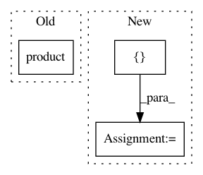

94f2c9d4bd78723440418b6ea914012d83b00bed,tests/test_utilities.py,,test_generate_predictions,#,444
Before Change
def test_generate_predictions():
for (use_feature_hashing, use_threshold, test_on_subset, all_probabilities,
string_labels) in product(*[[True, False], [True, False],
[True, False], [True, False],
[True, False]]):
if use_threshold and all_probabilities:
continue
yield (check_generate_predictions, use_feature_hashing,
After Change
def test_generate_predictions():
for (use_regression,
string_labels,
num_labels,
use_probability,
use_pos_label_str,
test_on_subset,
use_threshold,
predict_labels,
use_stdout,
multiple_input_files) in product([True, False],
[True, False],
[2, 4],
[True, False],
[True, False],
[True, False],
[True, False],
[True, False],
[True, False],
[True, False]):
// skip testing conditions that will raise exceptions
// in `generate_predictions`
if (use_threshold and num_labels != 2 or
use_threshold and predict_labels or
use_regression and string_labels):
continue
yield (check_generate_predictions,
use_regression,
string_labels,
num_labels,
use_probability,
use_pos_label_str,
test_on_subset,
use_threshold,
predict_labels,
use_stdout,
multiple_input_files)
def test_generate_predictions_console_bad_input_ext():
lc = LogCapture()
lc.begin()
In pattern: SUPERPATTERN
Frequency: 3
Non-data size: 3
Instances
Project Name: EducationalTestingService/skll
Commit Name: 94f2c9d4bd78723440418b6ea914012d83b00bed
Time: 2019-10-18
Author: nmadnani@ets.org
File Name: tests/test_utilities.py
Class Name:
Method Name: test_generate_predictions
Project Name: oddt/oddt
Commit Name: a10212a69685b846f0fa45a4458697b3cb55a9b2
Time: 2018-05-17
Author: maciek@wojcikowski.pl
File Name: rdkit_fixer.py
Class Name:
Method Name: PreparePDBMol
Project Name: pgmpy/pgmpy
Commit Name: ca25da7c55ba436ab557410d5f2e2e9b557d2840
Time: 2015-03-02
Author: abinash.panda.ece10@itbhu.ac.in
File Name: pgmpy/models/MarkovModel.py
Class Name: MarkovModel
Method Name: to_junction_tree